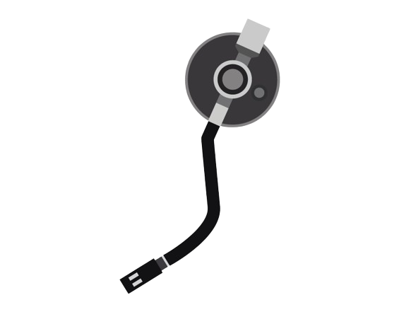
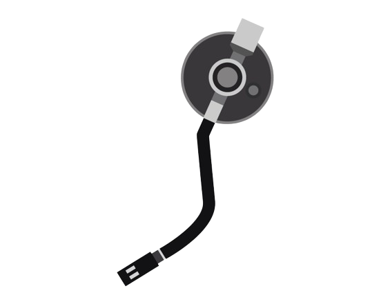

Like a spotlight the water hits me
Ran it extra cold to shake the words from my mouth
Though I know that no one's listening
I nervously rehearse for when you're around
And I keep waiting like
you might change my mind
Who wrote the book on goodbye
There's never been a way to make this easy
When there's nothing quite wrong but it don't feel right
Either your head or your heart
you set the other on fire
Back and forth now I'm feelin' guilty
Cause I just can't stop this pendulum in my head
Though I know that our time is ending
I'd rather lay forever right in this bed
And I keep waiting like
you might change my mind
Give me one more night
Who wrote the book on goodbye
There's never been a way to make this easy
When there's nothing quite wrong but it don't feel right
Either your head or your heart
you set the other on fire
No one knows knows
No one knows knows
We fell from the peak
And the stars they broke their code
I'm trying to forget
How I landed on this road
I'm caught in between
What I wish and what I know
When they say that you just know
Who wrote the book on goodbye
There's never been a way to make this easy
When there's nothing quite wrong but it don't feel right
Either your head or your heart
you set the other on fire
No one knows knows
No one knows knows
No one knows knows
You set the other on fire
You set the other on fire
You set the other on fire
you set the other on fire
Lauv - The Other
 
